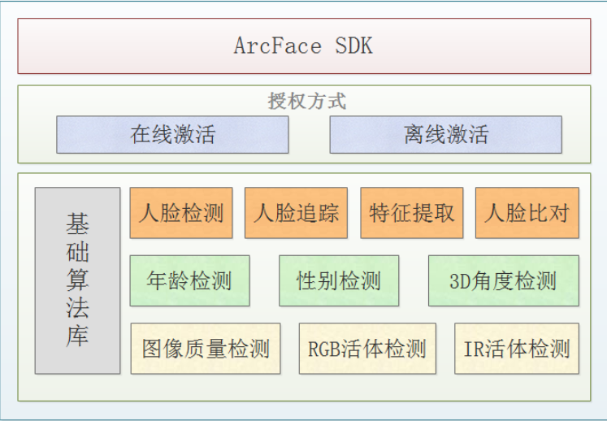
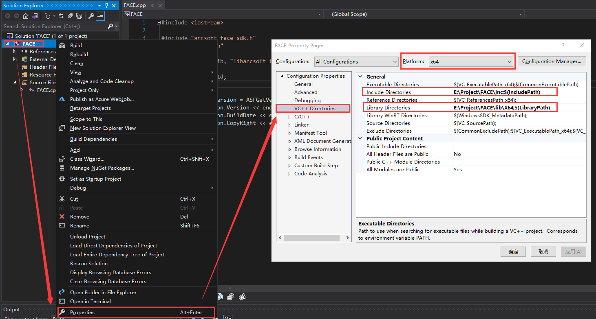
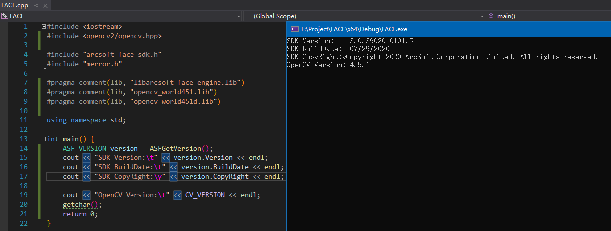

基于官方说明文档的简单介绍。
Windows开发环境配置：Visual Studio 2019，虹软SDK Windows 64位 3.0版本。
Linux开发环境配置：CLion（使用cmake即可），虹软SDK Linux64 3.0版本。
简单介绍

基础版本不支持图像质量检测和离线激活
基础原理
RGB可见光活体：主要基于图片破绽，判断目标对象是否为活体。例如图像中的屏幕反光、成像畸形、二次翻拍边框背景等。RGB活体检测基于单目摄像头，采用静默式识别方式，用户体验较好。同时RGB活体受光线以及成像质量影响较大，在强光、暗光等场景，容易影响检测结果，可通过适当的补光、使用宽动态镜头抵消逆光等方式缓解。
IR红外活体：主要基于红外光线反射成像原理，通过人脸成像甄别是否为活体。基于红外成像特点，对于屏幕类攻击，基本可以达到近100%的活体防御。IR采用静默式识别方式，体验较好，但需要增加红外摄像头成本，同时要结合场景考虑红外成像距离。
SDK包结构
SDK
|---demo
| |---ArcFaceDemo Demo工程
|---doc
| |---ARCSOFT_ARC_FACE_DEVELOPER'S_GUIDE.PDF 开发说明文档
|---inc
| |---amcomdef.h 平台文件
| |---asvloffscreen.h 平台文件
| |---arcsoft_face_sdk.h 接口文件
| |---merror.h 错误码文件
|---lib
|---|---Win32/x64
| |---|---libarcsoft_face.dll 算法库
| |---|---libarcsoft_face_engine.dll 引擎库
| |---|---libarcsoft_face_engine.lib 引擎库
|---samplecode
| |---samplecode.cpp 示例代码
|---releasenotes.txt 说明文件性能
处理器：Intel® Core™ i5-8500 3.0GHz
安装内存(RAM)：16.0GB(15.9GB可用)
系统类型：win10 64位操作系统
分辨率：1280 x 720不同人脸库条件下人脸比对+RGB活体检测全流程体感耗时
| 人脸库 | 性能(ms) |
|---|---|
| 1000 | <200 |
| 5000 | <300 |
| 10000 | <600 |
阈值推荐
活体取值范围为[0~1]，推荐阈值如下，高于此阈值的即可判断为活体。
- RGB 活体：0.5
- IR 活体：0.7
人脸比对取值范围为[0~1]，推荐阈值如下，高于此阈值的即可判断为同一人。
- 用于生活照之间的特征比对，推荐阈值0.80
- 用于证件照或生活照与证件照之间的特征比对，推荐阈值0.82
Windows 10 开发环境搭建
项目目录结构：
FACE
|----- .vs
|----- inc
|----- |----- opencv2
|----- |----- |----- ...
|----- |----- amcomdef.h
|----- |----- arcsoft_face_sdk.h
|----- |----- asvloffscreen.h
|----- |----- merror.h
|----- lib
|----- |----- X64
|----- |----- |----- libarcsoft_face_engine.lib
|----- |----- |----- opencv_world451.lib
|----- |----- |----- opencv_world451d.lib
|----- x64
|----- |----- Debug
|----- |----- |----- FACE.exe
|----- |----- |----- libarcsoft_face.dll
|----- |----- |----- libarcsoft_face_engine.dll
|----- |----- |----- opencv_world451.dll
|----- |----- |----- opencv_world451d.dll创建项目
Create a new project -> Console App，项目名称为FACE。
基础文件配置
在FACE目录下创建inc和lib/X64目录。
虹软SDK
下载虹软SDK。
- 将SDK包下
inc/内.h头文件放置在FACE/inc/目录下 - 将SDK包下
lib/内libarcsoft_face_engine.lib文件放置在FACE/lib/X64/目录下
OpenCV
下载OpenCV Windows版，我下载的是4.5.1版本，解压得到opencv目录。
- 将
opencv/build/include/目录下opencv2文件夹复制到FACE/inc/目录下 - 将
opencv/build/x64/vc15/lib/目录下.lib文件夹复制到FACE/lib/X64目录下
vc14与vc15的区别是支持Visual Studio版本不同，vc15支持较新的版本。
其中opencv_world451.lib是Release模式使用，opencv_world451d.lib是Debug模式使用。
注意： 先完成依赖配置，运行程序，此时会报告相应.dll未找到的错误，可以根据提示配置相应.dll文件。
在生成exe文件目录中放入虹软SDK的libarcsoft_face.dll和libarcsoft_face_engine.dll；OpenCV的opencv_world451.dll或opencv_world451d.dll。
.dll文件配置
libarcsoft_face.dll和libarcsoft_face_engine.dll在SDK包下lib/目录下opencv_world451.dll和opencv_world451.dll在opencv/build/x64/vc15/lib/目录下
其中opencv_world451.dll是Release模式生成的.exe文件使用，opencv_world451d.dll是Debug模式生成的.exe使用。
添加依赖

在Solution Explorer中右击FACE -> Properties
注意选择相应平台X64
Configuration Properties -> VC++ Directories中配置Include Directories和Library Directories。
Include Directories导向FACE/inc/opencv2和FACE/inc。Library Directories导向FACE/lib/X64
可选配置：在Configuration Properties -> Linker -> Input中的Additional Dependencies中添加相应.lib文件以替换在程序中使用#pragma comment(lib, "your.lib")
运行验证
#include <iostream>
#include <opencv2/opencv.hpp>
#include "arcsoft_face_sdk.h"
#include "merror.h"
#pragma comment(lib, "libarcsoft_face_engine.lib")
#pragma comment(lib, "opencv_world451.lib")
#pragma comment(lib, "opencv_world451d.lib")
using namespace std;
int main() {
ASF_VERSION version = ASFGetVersion();
cout << "SDK Version:\t" << version.Version << endl;
cout << "SDK BuildDate:\t" << version.BuildDate << endl;
cout << "SDK CopyRight:\y" << version.CopyRight << endl;
cout << "OpenCV Version:\t" << CV_VERSION << endl;
getchar();
return 0;
}
Linux 开发环境搭建
下载相应SDK。
ArcSoft Linux x64 SDK目录结构：
├── doc
│ └── ARCSOFT_ARC_FACE_DEVELOPER'S_GUIDE.pdf
├── inc
│ ├── amcomdef.h
│ ├── arcsoft_face_sdk.h
│ ├── asvloffscreen.h
│ └── merror.h
├── lib
│ └── linux_x64
│ ├── libarcsoft_face_engine.so
│ └── libarcsoft_face.so
├── releasenotes.txt
└── samplecode
├── ASFTestDemo
└── ReadMe.txt项目结构：
├── cmake-build-debug
│ ├── ArcFace64.dat
│ ├── CMakeCache.txt
│ ├── CMakeFiles
│ ├── cmake_install.cmake
│ ├── Makefile
│ ├── MilkFace_Linux
│ └── MilkFace_Linux.cbp
├── CMakeLists.txt
├── inc
│ ├── amcomdef.h
│ ├── arcsoft_face_sdk.h
│ ├── asvloffscreen.h
│ └── merror.h
├── lib
│ ├── libarcsoft_face_engine.so
│ └── libarcsoft_face.so
└── main.cpp将SDK下lib/目录内文件移入项目lib目录下。
将SDK下inc/目录内文件移入项目inc目录下。
CMakeLists.txt内容：
cmake_minimum_required(VERSION 3.17)
project(MilkFace_Linux)
set(CMAKE_CXX_STANDARD 14)
# OpenCV
find_package( OpenCV REQUIRED )
include_directories( ${OpenCV_INCLUDE_DIRS} )
# ArcSoft
include_directories(./inc)
link_directories(./lib)
add_executable(${PROJECT_NAME} main.cpp)
target_link_libraries( ${PROJECT_NAME}
${OpenCV_LIBS}
arcsoft_face
arcsoft_face_engine
)- Valine
- LiveRe
- ChangYan